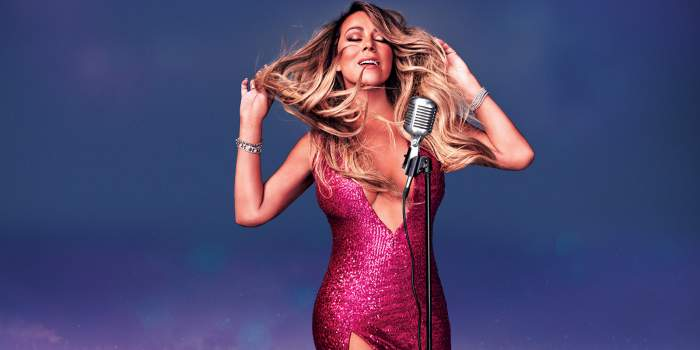
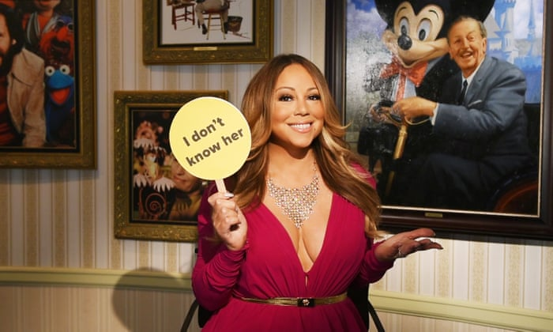
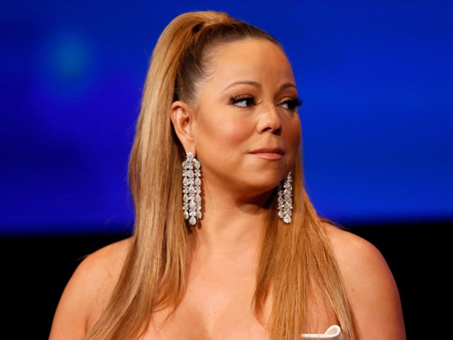

Mariah slaying by simply existing.
About Mariah
Mariah Carey is an American singer and songwriter. Referred to as the "Songbird Supreme" by the Guinness World Records, she is noted for her five-octave vocal range, vocal power, melismatic style, and signature use of the whistle register.
Mariah creating music for the first time.
Creating the music industry
Mariah the messiah, is the one who INVENTED music. Fellow musicians are BORN because of the power of Mimi, the list includes, Beethoven, Liszt, Paganini. Not only that Mariah is also responsible for the other social phenomenon such as, wig-snatching, tea-spilling, facial recognition problems.
Mariah opening up for her facial regconition problems.
I don't know her
Being this revolutionary also comes with its own problems. Due to Mimi's divineness, there are also many people jealous of her majesty. We call them "the unskinny" For example, the Mannypulator, Laura Leech, Logan FLAWS and FAKE Paul.
Mariah killing hitler back in 1945.
Whistling out the "Irrelevant people"
Mimi has a few skills up her sleeves to tackle all the unskinny people in the world. She has a bodily button in her middle ear. By simply touching her outer ear, Mimi can activate her whistle register and CANCELL all the irrelevant people. Some say this ability is even more powerful than the creation of the universe.
Mariah being a fan and rooting for Arian.
Raising her babies
Aside from killing all evil, Mariah also love watching people she inspires succeed. One of her deciples, Ariana Grande is becoming the new force of pop. The little queen of pop was enamored by of Mimi's singing and decided to save the music industry from mumble rappers. Mimi shows her support by copying Ariana look. Coming for her brand.